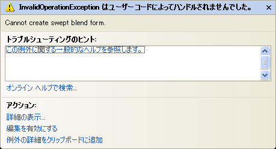
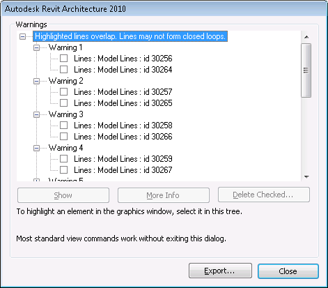

Debug Geometric Form Creation
Here is a useful hint on debugging the generation of geometric shapes from Harry Mattison.
Question: I am trying to create multiple swept blends in a family document. The first call to FamilyCreate.NewSweptBlendForm() succeeds, but the second call is failing with the following exception:

Answer: For problems like this I suggest commenting out the code that creates the form so that the command creates only the lines being used to create the form. Then you can run the command, verify the geometry of the lines, and use the Revit UI to select them and push the Create Form button. If Create Form fails, then the bug probably has nothing to do with the API.
In this case, there are many overlapping line warnings:

I'd expect that you will get better results if the geometry forms closed loops without overlaps.
Finally, this will be easier to debug if the lines are created in the active document instead of a new document created in the external command that is not visible without saving and reopening the file. Thin Lines mode might also be helpful because the lines are quite short.
Thank you very much Harry for these valuable suggestions!